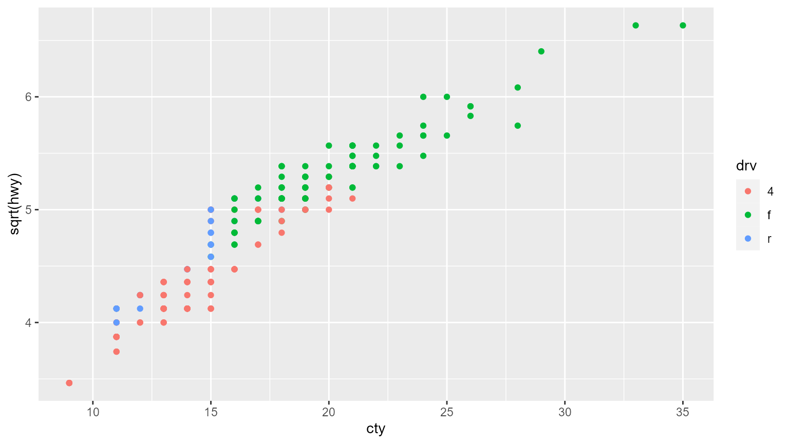

library(tinycodet)
#> Run `?tinycodet::tinycodet` to open the introduction help page of 'tinycodet'.Decimal (in)equality testing operators
This package adds the
%d==%, %d!=% %d<%, %d>%, %d<=%, %d>=%
(in)equality operators, which perform safer decimal number truth
testing. They are virtually equivalent to the regular (in)equality
operators, ==, !=, <, >, <=, >=, except for 2
aspects:
The
%d...%operators assume that if the absolute difference between any two numbers x and y is smaller than the Machine tolerance, sqrt(.Machine$double.eps), then x and y should be consider to be equal. For example:0.1*7 == 0.7returnsFALSE, even though they are equal, due to the way decimal numbers are stored in programming languages like ‘R’ and ‘Python’. But0.1*7 %d==% 0.7returnsTRUE.Only numeric input is allowed, so characters are not coerced to numbers. I.e.
1 < "a"givesTRUE, whereas1 %d<% "a"gives an error. For character equality testing, see %s==% from the ‘stringi’ package.
Thus these provide safer decimal number (in)equality operators.
Some examples:
x <- c(0.3, 0.6, 0.7)
y <- c(0.1*3, 0.1*6, 0.1*7)
print(x); print(y)
#> [1] 0.3 0.6 0.7
#> [1] 0.3 0.6 0.7
x == y # gives FALSE, but should be TRUE
#> [1] FALSE FALSE FALSE
x!= y # gives TRUE, should be FALSE
#> [1] TRUE TRUE TRUE
x > y # not wrong
#> [1] FALSE FALSE FALSE
x < y # gives TRUE, should be FALSE
#> [1] TRUE TRUE TRUE
x %d==% y # here it's done correctly
#> [1] TRUE TRUE TRUE
x %d!=% y
#> [1] FALSE FALSE FALSE
x %d<% y # correct
#> [1] FALSE FALSE FALSE
x %d>% y # correct
#> [1] FALSE FALSE FALSE
x %d<=% y # correct
#> [1] TRUE TRUE TRUE
x %d>=% y # correct
#> [1] TRUE TRUE TRUE
There are also the x %d{}% bnd and
x %d!{}% bnd operators, where bnd is a vector
of length 2, or a 2-column matrix
(nrow(bnd)==length(x) or nrow(bnd)==1). The
x %d{}% bnd operator checks if x is within the
closed interval with bounds defined by
bnd. The x %d!{}% bnd operator checks if
x is outside the closed interval with
bounds defined by bnd.
Examples:
x <- c(0.3, 0.6, 0.7)
bnd <- cbind(x-0.1, x+0.1)
x %d{}% bnd
#> [1] TRUE TRUE TRUE
x %d!{}% bnd
#> [1] FALSE FALSE FALSE
Safer atomic type casting
Atomic type casting in R is generally performed using the functions
as.logical(), as.integer(),
as.double(), as.character().
These functions have the annoying property that they strip attributes. I’ve taken the liberty of creating more convenient atomic conversion functions:
-
as_bool(): same asas.logical(), but with attributes preserved. -
as_int(): same asas.integer(), but with attributes preserved. -
as_dbl(): same asas.double()(i.e. convert to real numbers), but with attributes preserved. -
as_chr(): same asas.character(), but with attributes preserved.
All attributes except the “class” attribute are preserved.
Examples:
x <- c(rep(0, 2), seq(0, 2.5, by=0.5)) |> matrix(ncol=2)
colnames(x) <- c("one", "two")
attr(x, "test") <- "test"
print(x)
#> one two
#> [1,] 0.0 1.0
#> [2,] 0.0 1.5
#> [3,] 0.0 2.0
#> [4,] 0.5 2.5
#> attr(,"test")
#> [1] "test"
as_bool(x)
#> one two
#> [1,] FALSE TRUE
#> [2,] FALSE TRUE
#> [3,] FALSE TRUE
#> [4,] TRUE TRUE
#> attr(,"test")
#> [1] "test"
as_int(x)
#> one two
#> [1,] 0 1
#> [2,] 0 1
#> [3,] 0 2
#> [4,] 0 2
#> attr(,"test")
#> [1] "test"
as_dbl(x)
#> one two
#> [1,] 0.0 1.0
#> [2,] 0.0 1.5
#> [3,] 0.0 2.0
#> [4,] 0.5 2.5
#> attr(,"test")
#> [1] "test"
as_chr(x)
#> one two
#> [1,] "0" "1"
#> [2,] "0" "1.5"
#> [3,] "0" "2"
#> [4,] "0.5" "2.5"
#> attr(,"test")
#> [1] "test"
Locked constants
One can re-assign the values T and F. One
can even run something like T <- FALSE and
F <- TRUE! tinycodet adds the
lock_TF() function that forces T to stay
TRUE and F to stay FALSE.
Essentially, the lock_TF() function creates the locked
constant T and F, assigned to
TRUE and FALSE respectively, to prevent the
user from re-assigning them. Removing the created T and
F constants allows re-assignment again.
The X %<-c% A operator creates a
constant X with assignment A.
Constants cannot be changed, only accessed or removed. So if you have a
piece of code that requires some unchangeable constant, use this
operator to create said constant.
form()
When creating a formula with the tilde (~ ) operator,
and storing a formula in a variable to be used later, the environment is
captured by the formula. Therefore, any object in the captured
environment might not be freed from the memory, potentially creating
some memory leak.
The form() function is a convenience function, to
quickly create and return/store a formula more safely, by having no
default environment, and allowing the user to specify the environment
explicitly.
It can also quickly convert a single string to a formula, again allowing for explicit environment specification, and having no environment by default.
See the benchmark article for a demonstration of the memory leak.
# see also http://adv-r.had.co.nz/memory.html
f1 <- function() {
foo <- c(letters, LETTERS)
return(10)
}
x1 <- f1()
environment(x1) |> as.list() # empty, since no formula is used inside f1(), so safe
#> list()
f2 <- function() {
foo <- c(letters, LETTERS)
out <- a ~ b
return(out)
}
x2 <- f2()
environment(x2) |> as.list() # NOT safe: contains all objects from f2()
#> $out
#> a ~ b
#> <environment: 0x000001b72106bcd0>
#>
#> $foo
#> [1] "a" "b" "c" "d" "e" "f" "g" "h" "i" "j" "k" "l" "m" "n" "o" "p" "q" "r" "s"
#> [20] "t" "u" "v" "w" "x" "y" "z" "A" "B" "C" "D" "E" "F" "G" "H" "I" "J" "K" "L"
#> [39] "M" "N" "O" "P" "Q" "R" "S" "T" "U" "V" "W" "X" "Y" "Z"
exists("foo", envir = environment(x2)) # = TRUE: "foo" still exists!
#> [1] TRUE
environment(x2)$foo # can still access it; probably won't be removed by gc()
#> [1] "a" "b" "c" "d" "e" "f" "g" "h" "i" "j" "k" "l" "m" "n" "o" "p" "q" "r" "s"
#> [20] "t" "u" "v" "w" "x" "y" "z" "A" "B" "C" "D" "E" "F" "G" "H" "I" "J" "K" "L"
#> [39] "M" "N" "O" "P" "Q" "R" "S" "T" "U" "V" "W" "X" "Y" "Z"
f3 <- function() {
foo <- c(letters, LETTERS)
out <- form(a ~ b)
return(out)
}
x3 <- f3()
environment(x3) |> as.list() # empty, since form() is used, so safe
#> list()
f4 <- function() {
foo <- c(letters, LETTERS)
out <- form("a ~ b")
return(out)
}
x4 <- f4()
environment(x4) |> as.list() # empty, since form() is used, so safe
#> list()
with_pro and aes_pro
‘tinycodet’ provides standard-evaluated versions of the common
quoting functions with() and ggplot2::aes():
with_pro() and aes_pro(), respectively.
requireNamespace("ggplot2")
#> Loading required namespace: ggplot2
d <- import_data("ggplot2", "mpg")
# mutate data:
myform <- form(~ displ + cyl + cty + hwy)
d$mysum <- with_pro(d, myform)
summary(d)
#> manufacturer model displ year
#> Length:234 Length:234 Min. :1.600 Min. :1999
#> Class :character Class :character 1st Qu.:2.400 1st Qu.:1999
#> Mode :character Mode :character Median :3.300 Median :2004
#> Mean :3.472 Mean :2004
#> 3rd Qu.:4.600 3rd Qu.:2008
#> Max. :7.000 Max. :2008
#> cyl trans drv cty
#> Min. :4.000 Length:234 Length:234 Min. : 9.00
#> 1st Qu.:4.000 Class :character Class :character 1st Qu.:14.00
#> Median :6.000 Mode :character Mode :character Median :17.00
#> Mean :5.889 Mean :16.86
#> 3rd Qu.:8.000 3rd Qu.:19.00
#> Max. :8.000 Max. :35.00
#> hwy fl class mysum
#> Min. :12.00 Length:234 Length:234 Min. :33.70
#> 1st Qu.:18.00 Class :character Class :character 1st Qu.:43.10
#> Median :24.00 Mode :character Mode :character Median :50.15
#> Mean :23.44 Mean :49.66
#> 3rd Qu.:27.00 3rd Qu.:54.08
#> Max. :44.00 Max. :84.90
# plotting data:
x <- form("cty")
y <- form(~ sqrt(hwy))
color <- form(~ drv)
ggplot2::ggplot(d, aes_pro(x, y, color = color)) +
ggplot2::geom_point()
Safer Partial Matching
The safer_partialmatch() forces ‘R’ to give a warning
when partial matching occurs when using the dollar ($) operator, or when
other forms of partial matching occurs. It simply calls the
following:
options(
warnPartialMatchDollar = TRUE,
warnPartialMatchArgs = TRUE,
warnPartialMatchAttr = TRUE
)